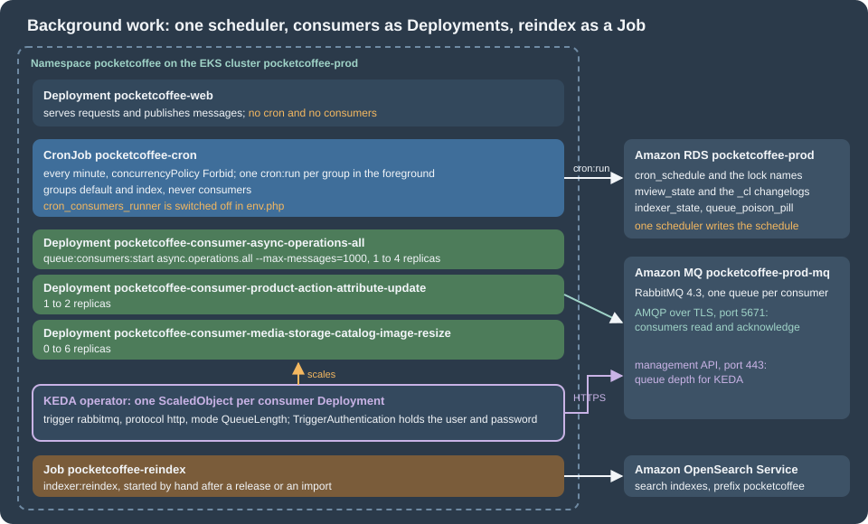

Cloud: Cron, Queue Consumers and Indexers
|
This content was generated with the assistance of AI and should be verified against the official documentation before being relied on in production. |
This page was written against Magento Open Source and Adobe Commerce 2.4.9 (generally available 2026-05-12) and Mage-OS 3.6.0, which is built on the
2.4.9 code base, Amazon MQ for RabbitMQ 4.3, KEDA 2.21 (the latest documented release on the check date), Kubernetes 1.36 or 1.37 on Amazon
EKS and Helm 4.3.1, and checked on 2026-10-29. Pocket Coffee, the fictitious specialty-coffee shop of this section, runs
www.pocketcoffee.example on the cluster pocketcoffee-prod in eu-west-1, namespace pocketcoffee, from its Helm chart
pocketcoffee-magento (release pocketcoffee, helpers pc.*). The page adds to that chart one CronJob, one Deployment per queue consumer with a
KEDA ScaledObject each, and a reindex Job. It names no prices: KEDA is open source and costs what the nodes it scales cost.
Magento does a lot of its work outside the web request, and that work is the part of the application that was written for one server.
The cron scheduler, the consumers and the indexers are explained on CLI, Cron and Message Queues
and Caching, Indexing and Performance and are not explained again; this page is about where each of them
lives when the shop runs as identical pods. The architecture is on Cloud: Reference Architecture, the
managed RabbitMQ is on Cloud: OpenSearch, Valkey and RabbitMQ as Managed Services, and the
chart that holds everything is on Cloud: EKS Infrastructure and Helm Deployment; the helpers pc.image, pc.envFrom and
pc.serviceAccountName used below are the ones of that chart. The Kubernetes objects themselves (CronJob, Deployment, Job) are explained on
Jobs and CronJobs; the autoscaling machinery on Autoscaling.

What changes in a cluster
On a single server one system crontab starts bin/magento cron:run every minute; the job consumers_runner of the cron group consumers starts a background PHP process
for every queue consumer; the indexers are in whichever mode somebody chose once. Everything runs on the machine that also serves the
shop, which is why none of it ever needed a decision. In a cluster each of these duties needs one:
| Duty | On one server | In the cluster |
|---|---|---|
Scheduling |
A crontab entry of the file system owner |
One CronJob, |
Starting consumers |
The cron job |
One Deployment per consumer, |
Scaling consumers |
|
A KEDA |
Indexing |
Update on Save or Update by Schedule, set by hand |
Update by Schedule everywhere, set once in the database; the cron group |
Logs |
|
|
The three pieces share the database and the broker, which is what makes them safe to move: the schedule is the table cron_schedule in RDS, the work of the consumers is in
the queues of Amazon MQ, and the state of the indexers is in the tables indexer_state and mview_state. None of it is in a file on a pod.
One cron scheduler
What cron:run does
bin/magento cron:run is not a daemon and not a single job: it is one pass of a scheduler. For each cron group it takes a lock on the group, removes the old rows of the
table cron_schedule, writes the rows for the jobs that will be due in the next minutes, and then runs the rows that are due and whose status is pending. The
rows are the whole state: a job that is running is a row with the status running, a job that ran is a row with success or error, and a job whose window passed before it
started is a row with missed. The behaviour below was read from the 2.4.9 source (Magento\Cron\Observer\ProcessCronQueueObserver and
Magento\Cron\Console\Command\CronCommand; the files of the tag 2.4.9 and of the branch 2.4-develop that were read are identical) and agrees with the description on
CLI, Cron and Message Queues:
-
Group lock. Generating and cleaning the rows of a group happens under the lock
CRON_<group>with a timeout of 60 seconds. A secondcron:runthat cannot get the lock logs "Could not acquire lock for cron group" and skips the group in that pass. -
Job lock. Before a job runs, the scheduler takes a lock named after the group and the job code with a timeout of zero, and then changes the status of the row from
pendingtorunningwith an atomic update. A second scheduler that reaches the same row finds it taken and moves on. Rows of the same job that are stillrunningwhen the next one starts are turned intoerror, which is how a job killed together with its pod becomes visible. -
Where the locks live. The lock provider is the key
lock/providerofenv.phpand defaults todb: the lock is a MySQL named lock taken withGET_LOCK, prefixed with the database name, so it is shared by every pod that uses the same database. The providerfilewould be per pod, and in a cluster it would give no protection at all; the providerscacheandzookeeperalso exist. -
Options.
--group=<id>runs one group,--exclude-group=<id>(repeatable) runs all but those, and--bootstrap=<param>adds a bootstrap parameter. The command does nothing, and says "Cron is disabled", when the keycron/enabledofenv.phpis0, which is the switch to use while a data migration runs.
Why one scheduler, and how many is too many
Because the locks and the atomic status change exist, two schedulers would not run the same row twice, and that is sometimes quoted as a reason to run the cron in every web pod. It
is not a good reason. Each pass of each scheduler still bootstraps Magento, reads and writes the same table, and competes for the group lock; with ten pods the table is written by ten
processes every minute for no extra throughput; a pod that is scaled in or evicted kills whatever job it was running; and a web pod that runs a long
indexer_update_all_views takes a PHP-FPM worker’s memory away from customers. The rule of the other shops of this section applies here as well: the web pods never
schedule anything, and exactly one CronJob does. That is also what Adobe’s documentation says for multi-node installations, where the crontab must run on one node only
(CLI, Cron and Message Queues).
The Kubernetes side of "exactly one" is concurrencyPolicy: Forbid on the CronJob: if the Job of the previous minute is still running when the next one is due, the controller skips the
new one instead of starting a second pod. The Magento side is the pair of locks above, which are the second line of defence when a Job is started by hand while the CronJob
is running, or when an old pod outlives a Job that the control plane has already given up on.
The pattern
The diagram shows one minute of the scheduler. The decision on the left is Kubernetes', the two locks on the right are Magento’s; the web pods and the consumers are not part of it.
The pitfall: groups that run in a separate process
The cron group index and the group consumers have use_separate_process set to 1 in their cron_groups.xml; the group default has 0. For a group with 1 the
scheduler does not run the jobs itself: it starts php bin/magento cron:run --group=<id> --bootstrap=standaloneProcessStarted=1 through a shell command renderer that sends the process to the background (the virtual
type shellBackgroundCron in the di.xml of Magento_Cron) and goes on to the next group. That is a good design on a server, where the parent returns after a second and the crontab entry is
free to start the next pass. In a container it is a trap: when the main process of the container ends, the pod ends, and the background children are killed with it. A CronJob that runs
the plain cron:run therefore succeeds in a few seconds, shows a green Job every minute, and the group index never gets a chance to run; the indexers fall behind and nothing reports an error.
The same source shows the way out. A process that is started with --bootstrap=standaloneProcessStarted=1 does not fork again: it runs the group in the foreground. So the container starts one
cron:run --group=<id> --bootstrap=standaloneProcessStarted=1 per group and waits for all of them, which is what the template below does. The parameter is not listed in the
Adobe documentation of cron:run; it is an internal parameter that the scheduler passes to itself, so it is one more reason to test the chart with the version you run and to read the
cron_schedule table after an upgrade (the commands are in Verifying).
Which groups to run
The groups differ per installation: every module can add jobs to the groups it chooses or declare a new one. The groups that matter on a Magento Open Source shop are default (most
core jobs: e-mail queue, cleaning, sitemap, currency rates) and index (the three jobs indexer_reindex_all_invalid, indexer_update_all_views and indexer_clean_all_changelogs).
Adobe Commerce and several extensions add groups. The list of groups of your image is in the XML of its modules:
# Run in the build stage or in a shell of the image, from the Magento root
grep -rhoE '<group id="[a-z0-9_]+"' vendor/*/*/etc/crontab.xml vendor/*/*/*/etc/crontab.xml app/code/*/*/etc/crontab.xml 2>/dev/null \
| sort -uThe chart takes the list from cron.groups (default default and index) and the groups of the extensions of the shop are added to it. The group consumers is never in the list, because
its only job, consumers_runner, is what the next part replaces. A group that is not listed does not run at all, which is the failure to look for when a feature of an extension
"does nothing" in the cluster only: look at the rows of cron_schedule for the job code, and at the groups of that extension’s crontab.xml.
The configuration of Magento
Two nodes of env.php belong to this page. The first switches off the consumer runner (the whole file is a template of the ConfigMap pocketcoffee-env-php, as in
Cloud: EKS Infrastructure and Helm Deployment):
// app/etc/env.php, fragment of the ConfigMap template pocketcoffee-env-php
'cron_consumers_runner' => [
'cron_run' => false, // the boolean false, not an environment variable: getenv() returns strings
],
'queue' => [
// default_connection and the amqp node are shown on the page about the managed services
'consumers_wait_for_messages' => 1, // the integer 1: the code compares with ===
],
'lock' => [
'provider' => 'db', // the default; never 'file' in a cluster
],Both values have a trap that was found in the source. ConsumersRunner::run() reads cron_consumers_runner/cron_run and returns when it is falsy, so a getenv() string such as
"false" (which is truthy in PHP) would leave the runner active: write the literal. And the consumer loop treats queue/consumers_wait_for_messages as "wait for messages" only when
the value is the integer 1 (the comparison is strict), so true or "1" makes the consumer end as soon as the queue is empty.
The CronJob
The values and the template. The pod runs the same image as the web pods, with the same environment (pc.envFrom), the same env.php mounted read-only and the same writable
paths: var/ and /tmp as emptyDir, pub/media only when the media mode is the shared file system (with the S3 remote storage the pods need no media volume). The root file system is read-only,
and generated/ and pub/static are baked into the image. The helper templates at the top repeat those mounts once for the cron, the consumers and the reindex Job.
# values.yaml (fragment)
cron:
enabled: true
schedule: "* * * * *"
groups: [default, index] # every group except consumers; see "Which groups to run"
activeDeadlineSeconds: 900
resources:
requests: { cpu: 250m, memory: 1Gi }
limits: { memory: 2Gi }Source: Helm Docs: Values files
{{- /* templates/_helpers.tpl (fragment): the mounts and the security context that cron, consumers and the reindex Job share */ -}}
{{- define "pc.workerVolumeMounts" -}}
- name: env-php
mountPath: /var/www/html/app/etc/env.php
subPath: env.php
readOnly: true
- name: var
mountPath: /var/www/html/var
- name: tmp
mountPath: /tmp
{{- if eq .Values.media.mode "efs" }}
- name: media
mountPath: /var/www/html/pub/media
{{- end }}
{{- end -}}
{{- define "pc.workerVolumes" -}}
- name: env-php
configMap:
name: {{ .Release.Name }}-env-php
- name: var
emptyDir: {}
- name: tmp
emptyDir: {}
{{- if eq .Values.media.mode "efs" }}
- name: media
persistentVolumeClaim:
claimName: {{ .Values.media.claimName }}
{{- end }}
{{- end -}}
{{- define "pc.workerSecurity" -}}
runAsNonRoot: true
runAsUser: 33
runAsGroup: 33
readOnlyRootFilesystem: true
allowPrivilegeEscalation: false
capabilities:
drop: ["ALL"]
{{- end -}}Source: Helm Docs: Named templates
{{- if .Values.cron.enabled }}
apiVersion: batch/v1
kind: CronJob
metadata:
name: {{ .Release.Name }}-cron
labels:
{{- include "pc.labels" . | nindent 4 }}
app.kubernetes.io/component: cron
spec:
schedule: {{ .Values.cron.schedule | quote }}
concurrencyPolicy: Forbid
startingDeadlineSeconds: 60
successfulJobsHistoryLimit: 1
failedJobsHistoryLimit: 3
jobTemplate:
spec:
backoffLimit: 0
activeDeadlineSeconds: {{ .Values.cron.activeDeadlineSeconds }}
ttlSecondsAfterFinished: 3600
template:
metadata:
labels:
{{- include "pc.labels" . | nindent 12 }}
app.kubernetes.io/component: cron
spec:
restartPolicy: Never
serviceAccountName: {{ include "pc.serviceAccountName" . }}
automountServiceAccountToken: false
securityContext:
fsGroup: 33
containers:
- name: cron
image: {{ include "pc.image" . }}
imagePullPolicy: {{ .Values.image.pullPolicy }}
workingDir: /var/www/html
command: ["/bin/sh", "-c"]
args:
- |
# Run every group in the foreground, in parallel, and wait for all of them.
pids=""
for group in {{ join " " .Values.cron.groups }}; do
php bin/magento cron:run --group="$group" --bootstrap=standaloneProcessStarted=1 &
pids="$pids $!"
done
status=0
for pid in $pids; do
wait "$pid" || status=1
done
exit "$status"
envFrom:
{{- include "pc.envFrom" . | nindent 16 }}
securityContext:
{{- include "pc.workerSecurity" . | nindent 16 }}
resources:
{{- toYaml .Values.cron.resources | nindent 16 }}
volumeMounts:
{{- include "pc.workerVolumeMounts" . | nindent 16 }}
volumes:
{{- include "pc.workerVolumes" . | nindent 12 }}
{{- end }}The decisions in the template:
-
concurrencyPolicy: ForbidandstartingDeadlineSeconds: 60. A run that overlaps the previous one is skipped, and a run that could not start within a minute of its time (a control-plane pause, a node being replaced) is not started late on top of the next one. Magento tolerates the gaps: the rows of the groupdefaulthave aschedule_lifetimeof 15 minutes and those ofindexof 2 minutes, after which an unstarted row becomesmissedand the next pass writes new ones. -
backoffLimit: 0andrestartPolicy: Never. A failed pass is not retried by Kubernetes; the next minute is the retry, and the jobs themselves have their status incron_schedule. A retry loop of pods would pile up againstForbidand hide the failure. -
activeDeadlineSeconds: 900. A pass that has not ended after 15 minutes is killed. It is a safety net against a hung database call, not a way to give jobs more time: one slow job in one group delays the start of the whole next pass, because the container waits for every group. The jobs that can take an hour (a fullindexer_reindex_all_invalidof a big catalogue, exports) belong in a Job, as shown at the end of this page, not in the minute-by-minute pass. If one group must not wait for another, give it its own CronJob with its own name,pocketcoffee-cron-<group>, and list it in a separate value; the template above stays the same. -
waiton every child andexit 1when one fails. The Job is marked failed when a group ends with a non-zero code, andfailedJobsHistoryLimit: 3keeps the pods forkubectl logs. -
The memory limit. The PHP CLI of the official images has no
php.iniand amemory_limitof 128M, far under the 756M that Magento asks for. Thephp.iniof the image (the ConfigMappocketcoffee-phpis mounted by the web pods and can be added to this pod the same way) setsmemory_limitfor the CLI. The scheduler starts its children with a plainphp, so an option on the command line of the first process would not reach them. -
Time zones. The CronJob’s
scheduleonly has to tick every minute, so its time zone does not matter. The expressions of the Magento jobs (a nightly job at 03:00) are a different matter:Magento\Cron\Model\Schedulereads the schedules ofcrontab.xmland of the database as times in the time zone of the store configuration (the code comment says "admin store timezone") and storesscheduled_atin UTC. A pod’s own time zone is not involved, so nothing has to be set on the container.
Queue consumers as Deployments
What consumers_runner does, and why it goes
On one server consumers_runner is the supervisor. Magento\MessageQueue\Model\Cron\ConsumersRunner::run() is called by the cron group consumers every minute. When
cron_consumers_runner/cron_run is true it takes the consumers of the installation (or the list cron_consumers_runner/consumers), and for each one that is not already running it starts a background process of
php bin/magento queue:consumers:start <name> --single-thread --max-messages=<n> (default 10000, cron_consumers_runner/max_messages), or one process per entry of multiple_processes.
"Already running" is decided with a named lock: the consumer takes md5(<name>) with --single-thread, the runner asks whether that lock is taken. The design assumes one machine, and breaks in three ways in a cluster:
-
The consumers would live in the cron pod. The runner’s children are background processes of the pass that forked them, the same trap as the groups above: they die when the CronJob pod ends, and a CronJob pod that waited for them would never end and would block
Forbid. -
There is no supervision. A consumer that is killed by the kernel for memory is started again at the next minute at best. Kubernetes restarts a container at once, reports the restarts, and keeps the pod’s resource requests and limits for the consumer alone.
-
There is no scaling. The number of processes of a consumer is a number in
env.php. The queue depth that decides how many are needed is only visible to the broker.
So cron_consumers_runner/cron_run is false (see above) and each consumer that the shop needs is a Deployment whose one container runs one queue:consumers:start in the foreground. The
consumers that exist are listed by bin/magento queue:consumers:list (24 on the Mage-OS 3.6.0 test shop of the other pages); a shop runs only those whose modules it uses. Pocket Coffee runs three:
async.operations.all (the individual operations of bulk and asynchronous API calls and mass actions), product_action_attribute.update (the mass attribute updates of the Admin) and
media.storage.catalog.image.resize (catalogue image resizing, see Cloud: Media and Remote Storage).
In the XML of the three modules the name of the consumer and the name of its queue are the same, which is also the name of the queue on the broker.
The command
The command is the one of the single-server page; the options that matter in a container were read from StartConsumerCommand and the loop in CallbackInvoker:
| Option or behaviour | In a Deployment |
|---|---|
|
The process handles N messages and exits with code 0. Without it the consumer subscribes and never returns. A finite value is what releases memory that PHP does not give back and what makes the consumer pick up a new configuration, so every Deployment sets it (1000 here; the runner’s own default is 10000). |
|
Takes the named lock of the consumer with timeout 0 and exits with "Consumer with the same name is running" when it is taken. Do not pass it: with two replicas the second one would fail and restart in a loop. It exists for the one-per-machine model of the runner. |
|
The same lock, one per process number. Not needed either: the number of processes is the number of replicas. |
|
Left alone. The area defaults to |
|
Must be the integer |
With the AMQP connection an idle consumer polls the broker (dequeue() with a one-second sleep by default), so every idle replica is one request per second to RabbitMQ. That is nothing for
a few replicas and one more reason to let KEDA take idle consumers to zero.
The Deployments
The values describe each consumer once; the template renders one Deployment per entry and the name of the Deployment is derived from the name of the consumer by replacing dots and underscores with dashes.
| Consumer (and queue) | Deployment | Replicas |
|---|---|---|
|
|
1 to 4 |
|
|
1 to 2 |
|
|
0 to 6 |
# values.yaml (fragment)
consumers:
- name: async.operations.all
queue: async.operations.all
maxMessages: 1000
minReplicas: 1
maxReplicas: 4
messagesPerReplica: 100 # KEDA: messages in the queue per replica
- name: product_action_attribute.update
queue: product_action_attribute.update
maxMessages: 1000
minReplicas: 1
maxReplicas: 2
messagesPerReplica: 50
- name: media.storage.catalog.image.resize
queue: media.storage.catalog.image.resize
maxMessages: 1000
minReplicas: 0
maxReplicas: 6
messagesPerReplica: 200
consumer:
terminationGracePeriodSeconds: 30
resources:
requests: { cpu: 250m, memory: 1Gi }
limits: { memory: 2Gi }Source: Helm Docs: Values files
{{- range .Values.consumers }}
{{- $slug := .name | replace "." "-" | replace "_" "-" }}
---
apiVersion: apps/v1
kind: Deployment
metadata:
name: {{ $.Release.Name }}-consumer-{{ $slug }}
labels:
{{- include "pc.labels" $ | nindent 4 }}
app.kubernetes.io/component: consumer
pocketcoffee.example/consumer: {{ $slug }}
spec:
{{- if not $.Values.keda.enabled }}
replicas: {{ .minReplicas | default 1 }}
{{- end }}
revisionHistoryLimit: 3
strategy:
type: RollingUpdate
rollingUpdate:
maxSurge: 1
maxUnavailable: 0
selector:
matchLabels:
app.kubernetes.io/instance: {{ $.Release.Name }}
app.kubernetes.io/component: consumer
pocketcoffee.example/consumer: {{ $slug }}
template:
metadata:
labels:
{{- include "pc.labels" $ | nindent 8 }}
app.kubernetes.io/component: consumer
pocketcoffee.example/consumer: {{ $slug }}
spec:
serviceAccountName: {{ include "pc.serviceAccountName" $ }}
automountServiceAccountToken: false
terminationGracePeriodSeconds: {{ $.Values.consumer.terminationGracePeriodSeconds }}
securityContext:
fsGroup: 33
containers:
- name: consumer
image: {{ include "pc.image" $ }}
imagePullPolicy: {{ $.Values.image.pullPolicy }}
workingDir: /var/www/html
command: ["php", "bin/magento", "queue:consumers:start", {{ .name | quote }}, "--max-messages={{ .maxMessages }}"]
envFrom:
{{- include "pc.envFrom" $ | nindent 12 }}
securityContext:
{{- include "pc.workerSecurity" $ | nindent 12 }}
resources:
{{- toYaml $.Values.consumer.resources | nindent 12 }}
volumeMounts:
{{- include "pc.workerVolumeMounts" $ | nindent 12 }}
volumes:
{{- include "pc.workerVolumes" $ | nindent 8 }}
{{- end }}Notes on the template:
-
No
replicaswhen KEDA is on. TheScaledObjectowns the replica count (the next part). Withkeda.enabled: falsethe Deployment usesminReplicas. -
No probes. A consumer serves no port. A liveness probe that runs a command in the pod would start a PHP process inside a pod that is already using its memory limit, and the only failure that matters, a consumer that is alive but does not consume, shows up as a growing queue, which is the signal KEDA and the alerts of Cloud: Autoscaling, Observability, Backups and Security already watch.
-
maxUnavailable: 0. During a release a new consumer starts before an old one stops, so the queue is never without a consumer. Both versions of the code run side by side for a moment: handlers must accept the messages of the previous release, a rule that comes back on Cloud: Releases and Zero-Downtime Deployments. -
The same image tag as the web pods. A consumer that runs old code against a new schema is the typical post-release error; because the consumers are in the same chart and the same
image.tag, onehelm upgradereplaces them together with the web pods, after the migration Job.
Restarts and queue:consumers:restart
A consumer that reaches --max-messages ends with code 0 and, because a Deployment’s pods have restartPolicy: Always, the kubelet starts the container again. Kubernetes applies a back-off to restarts of a
container that ends quickly (10 seconds, doubling, capped at five minutes, reset after the container has run for ten minutes), whatever the exit code, so a busy queue with a small --max-messages shows
restarts with a delay and counts in the RESTARTS column. That is expected, not a failure; choose --max-messages so that a consumer lives for minutes under load (1000 messages of the resize consumer
are minutes of work) and the restart count stays low. Check the behaviour of your Kubernetes version in the pod lifecycle documentation: the decay of the back-off has been under change in recent releases.
On a server the command bin/magento queue:consumers:restart tells the running consumers to restart after a deployment. It writes a new version to the table queue_poison_pill; each consumer compares the version
it saw when it started with the current one after each message it receives, and if they differ it rejects that message (the broker gets it back) and exits with code 0. In a cluster it is not part of a release, because the rolling update
replaces the pods. It is still useful in one case: to make every consumer drop its in-memory state (for example after a change of configuration that is read at start) without a new image, and
a consumer with an empty queue notices the pill only when its next message arrives.
Graceful shutdown
A consumer is stopped by SIGTERM, whenever a pod is evicted, a node is drained, KEDA scales in or a rollout replaces it. In the consumer classes that were read (Consumer, CallbackInvoker, StartConsumerCommand) no signal handler
is registered, so PHP’s default applies and the process ends at once, in the middle of the handler if it is running. With RabbitMQ that is survivable by design: the message was delivered but not acknowledged, and a message that is
not acknowledged when the connection closes goes back to the queue and is delivered again. What the shop has to guarantee is the other half of that contract, which is also what the single-server page already says: a handler must be idempotent, because
"delivered twice" is a normal event in a cluster.
So a long terminationGracePeriodSeconds would not help here (there is nothing that finishes the current message), and the value is 30 seconds only to give the container time to close its connection. Two precautions follow:
keep the work of one message short (the resize consumer handles one image per message), and spread the replicas over nodes with topologySpreadConstraints as for the web pods so that one node drain does not stop a whole consumer
(Scheduling and Disruptions). Whether the 2.4.9 consumers register signal handlers anywhere that was not read is not documented by Adobe; test a kubectl delete pod of a consumer
that is in the middle of a slow handler and look at whether the message is redelivered once.
Several replicas of one consumer
With the AMQP connection all the replicas of a consumer read the same queue and the broker gives each message to one of them (competing consumers), which is what makes scaling work. Three things have to be true for a consumer to be scaled beyond one replica:
-
the handler is idempotent (above);
-
the order of the messages does not matter, or is not guaranteed anyway: two replicas process messages in parallel and a retry changes the order;
-
the handler takes its own locks when it touches shared state. The consumers of the core modules were written to be run
multiple_processeson one server, which is the same situation, but a consumer of an extension may not have been. Keep an unknown consumer atmaxReplicas: 1until its vendor says otherwise.
Consumers that use the database queue (connection="db", the table queue_message) are not covered by this page: the broker is not involved, and the queue depth is a COUNT on queue_message_status that a KEDA scaler for MySQL can follow, as for the Action Scheduler on
Cloud: Action Scheduler Workers on Kubernetes. On a production shop the connection is amqp for everything that is queue-driven; the managed service exists for that.
Scaling the consumers with KEDA
What KEDA does, and the Amazon MQ endpoint
KEDA is an operator that turns an external number (here the number of messages waiting in a queue) into a replica count. A ScaledObject names a Deployment and one or more triggers; KEDA creates and owns a HorizontalPodAutoscaler for it
and adds what a plain HPA lacks, scaling from zero and back to zero. The general mechanics are on Autoscaling; KEDA is installed once per cluster (the Helm chart or the EKS add-on of the cluster page,
EKS Clusters) and is not part of the Magento chart.
The RabbitMQ scaler can read the queue length over AMQP or over the management HTTP API. The HTTP API is the right one here, for a reason that is in the scaler’s documentation: only the HTTP API counts the unacknowledged messages, so a
queue whose messages are all in the hands of busy consumers still reads as non-empty. On Amazon MQ the management API is served on the same listener ports as the web console, 443 and 15671 (the documentation says they can be used
interchangeably), under the broker’s endpoint, with the broker’s users. The endpoint of Pocket Coffee’s broker is the placeholder b-example.mq.eu-west-1.on.aws; the AMQP port of the consumers is 5671 and the management port used
by KEDA is 443. Both are reachable only inside the VPC, so the security group of the broker must allow 443 from the nodes that run the KEDA operator (not from the application pods): the scaler runs inside the operator, which is in the namespace
keda and in the same VPC.
A user for KEDA
The chart on the Cloud: EKS Infrastructure and Helm Deployment page keeps the setup minimal: its ScaledObject reads the broker user of env.php from the consumer’s environment. This section is the stricter variant, with a monitoring-only user and a TriggerAuthentication; the keda.* values below extend the chart’s keda block and replace its trigger metadata.
The consumers connect as the broker user magento. KEDA gets a user of its own, keda, that can only look: Amazon MQ supports the tags administrator, management and monitoring on RabbitMQ users, and a user is created, and its tags
and permissions set, through the management API or the web console with an administrator (the first user, created with the broker). The commands below use placeholders; the administrator password is read from the environment and never typed
into the shell history, and the password of keda goes into the secret pocketcoffee/prod/magento under the key already used for the AMQP user, or under a key of its own (the template further down reads the key from keda.remoteKey).
# From a host inside the VPC (a bastion or a debug pod). Placeholders only.
MQ=https://b-example.mq.eu-west-1.on.aws
curl -fsS -u "admin:${MQ_ADMIN_PASSWORD}" -X PUT "$MQ/api/users/keda" \
-H 'content-type: application/json' \
-d "{\"password\":\"${KEDA_MQ_PASSWORD}\",\"tags\":\"monitoring\"}"
curl -fsS -u "admin:${MQ_ADMIN_PASSWORD}" -X PUT "$MQ/api/permissions/%2F/keda" \
-H 'content-type: application/json' \
-d '{"configure":"","write":"","read":".*"}'
# What KEDA will request, for one queue (the vhost / is written %2F)
curl -fsS -u "keda:${KEDA_MQ_PASSWORD}" "$MQ/api/queues/%2F/async.operations.all" \
| python3 -c 'import json,sys; q=json.load(sys.stdin); print(q["messages"], q["messages_ready"], q["messages_unacknowledged"])'The permission set is the smallest that was expected to work for reading a queue’s counters, and it was not tried against a broker: the second curl is the test, and a 401 or 403 means that the tag or the permissions need
widening (try management next). The permission pattern syntax and the API are those of RabbitMQ itself.
The objects
Three objects per release plus one per consumer: an ExternalSecret that builds the secret with the user and the password of keda from the secret store, one TriggerAuthentication that tells KEDA which
keys of that secret are the username and the password of the scaler, and one ScaledObject per consumer Deployment. The {{ .password }} inside quotes in the first object is for External Secrets, not for Helm: the template writes it as a Helm string so that Helm leaves it alone.
# values.yaml (fragment)
keda:
enabled: true
pollingIntervalSeconds: 30
cooldownPeriodSeconds: 300
managementUrl: https://b-example.mq.eu-west-1.on.aws:443
authName: pocketcoffee-rabbitmq
secretName: pocketcoffee-keda-rabbitmq
remoteSecret: pocketcoffee/prod/magento
remoteKey: amqp_password # or a key of its own for the keda user's password
rabbitmqUser: keda{{- if .Values.keda.enabled }}
apiVersion: external-secrets.io/v1
kind: ExternalSecret
metadata:
name: {{ .Values.keda.secretName }}
labels:
{{- include "pc.labels" . | nindent 4 }}
spec:
refreshInterval: 1h
secretStoreRef:
kind: ClusterSecretStore
name: aws-secretsmanager
target:
name: {{ .Values.keda.secretName }}
template:
data:
username: {{ .Values.keda.rabbitmqUser | quote }}
password: "{{ "{{ .password }}" }}"
data:
- secretKey: password
remoteRef:
key: {{ .Values.keda.remoteSecret }}
property: {{ .Values.keda.remoteKey }}
---
apiVersion: keda.sh/v1alpha1
kind: TriggerAuthentication
metadata:
name: {{ .Values.keda.authName }}
labels:
{{- include "pc.labels" . | nindent 4 }}
spec:
secretTargetRef:
- parameter: username
name: {{ .Values.keda.secretName }}
key: username
- parameter: password
name: {{ .Values.keda.secretName }}
key: password
{{- range .Values.consumers }}
{{- $slug := .name | replace "." "-" | replace "_" "-" }}
---
apiVersion: keda.sh/v1alpha1
kind: ScaledObject
metadata:
name: {{ $.Release.Name }}-consumer-{{ $slug }}
labels:
{{- include "pc.labels" $ | nindent 4 }}
spec:
scaleTargetRef:
name: {{ $.Release.Name }}-consumer-{{ $slug }}
minReplicaCount: {{ .minReplicas }}
maxReplicaCount: {{ .maxReplicas }}
pollingInterval: {{ $.Values.keda.pollingIntervalSeconds }}
cooldownPeriod: {{ $.Values.keda.cooldownPeriodSeconds }}
triggers:
- type: rabbitmq
metadata:
protocol: http
host: {{ $.Values.keda.managementUrl | quote }}
vhostName: "/"
queueName: {{ .queue | quote }}
mode: QueueLength
value: {{ .messagesPerReplica | quote }}
activationValue: "0"
authenticationRef:
name: {{ $.Values.keda.authName }}
{{- end }}
{{- end }}Source: KEDA Docs: RabbitMQ Queue scaler
The fields, as documented for KEDA 2.21 and checked against the scaler’s source (pkg/scalers/rabbitmq_scaler.go):
-
protocol: http. The management API. The defaultautoinfers it from the scheme ofhost; it is written explicitly so that a change of the URL cannot switch to AMQP unnoticed. -
host. The URL of the management API without credentials. Theusernameandpasswordof theTriggerAuthenticationare used when both are set (setting only one is an error). The URL has no path: the scaler takes the last path segment ofhostas the vhost, and an empty one means the root vhost/, which it requests as%2F. Pocket Coffee’s vhost is/, sovhostName: "/"says the same thing explicitly; a shop with another vhost setsvhostNameand the scaler escapes it. -
mode: QueueLengthandvalue. The target number of messages per replica. KEDA, through the HPA, asks forceil(messages / value)replicas: withvalue: "100"and 450 messages inasync.operations.all, five replicas, capped bymaxReplicaCount. Rate-based modes (MessageRateand others) exist and needprotocol: http; the queue length is the signal that matches a backlog. -
Which messages count. With the HTTP protocol the length is the total (ready plus unacknowledged) unless
excludeUnacknowledged: "true"is set. The default is right for consumers: a message that is being processed is load. -
activationValue. The threshold above which the scaler counts as active; with the default of0, one message wakes a Deployment that is at zero replicas, which is whatminReplicaCount: 0of the resize consumer relies on. -
pollingIntervalandcooldownPeriod. The scaler asks the broker every 30 seconds; after the last active reading KEDA waits 300 seconds before it scales to zero. Scaling between 1 andmaxReplicaCountis done by the HPA’s own algorithm and its default stabilisation.
Validation: helm lint and helm template | kubeconform -strict -ignore-missing-schemas pass; the ExternalSecret, the TriggerAuthentication and the three ScaledObject objects are custom resources that kubeconform skips
(five skipped resources in the run of this page), so they are validated on a cluster with kubectl apply --dry-run=server once KEDA and External Secrets are installed.
Pitfalls
-
The
ScaledObjectowns the replica count. The Deployment omitsreplicas; never add an HPA of your own for the same Deployment, and never scale the consumers by hand withkubectl scale(KEDA puts the number back). -
Scale to zero means a cold start. The first message into an empty queue waits for the next poll (up to 30 seconds), the pod scheduling (a new node under Auto Mode or Karpenter can add a minute) and the image pull. That is fine for image resizing and wrong for a consumer that a shopper waits for, so
minReplicasis 1 for the other two. -
Scale-in kills consumers. The HPA removes pods with SIGTERM, and the consumers do not finish their message (above). The cooldown and the HPA’s stabilisation window make it rare; the idempotent handlers make it harmless.
-
The scaler runs in the operator. If KEDA cannot reach the broker (the security group, a wrong URL, a wrong tag), the
ScaledObjectgoes toUnknownorFailedand the replica count stays where it was. Addfallback(a number of replicas to use after N failed reads) so that a broken scaler does not freeze the consumers at zero, and alert on KEDA’skeda_scaler_errors_total. -
A TLS certificate that is not trusted. The Amazon MQ endpoint presents a certificate of a public authority, so the default trust of the operator image works;
unsafeSslmust not be needed, and setting it is a sign that the URL is wrong. -
One trigger per queue. A Deployment that reads two queues (it does not here) would need two triggers; keep one consumer, one queue and one
ScaledObject.
Indexers in Update by Schedule
Why schedule
An indexer in Update on Save rebuilds the affected rows inside the request that changed the data (the Admin save, the import, the API call), so the web pods, the one thing that must stay quick, pay for the indexing, and several of them can try the same
tables at once. In Update by Schedule the change is only recorded: MySQL triggers on the source tables write the id of the changed row to a changelog table (_cl appended to the name of the view), and the cron job indexer_update_all_views of the group
index, once a minute, reads the new ids and reindexes those entities in portions. This is the mview mechanism of
Caching, Indexing and Performance, and it is what Adobe recommends for production. In a cluster it has an additional merit: the work moves to the one pod that is allowed to do background work, the CronJob.
The mode is state of the database, not of the code. The triggers and the changelog tables live in RDS, the mode in the tables mview_state and indexer_state; config.php of the image and the ConfigMap of env.php hold nothing about it. Two consequences:
-
it is set once, after the installation and again after any restore of a database that was taken from a place where the mode was different (the migration page, Cloud: Migrating from a Single Server, does this after the import);
-
it cannot be forgotten by a rollout and it cannot be rolled back with the image.
Setting and checking the mode
# In any pod of the image that has the environment, e.g. through kubectl exec into a web pod
kubectl -n pocketcoffee exec deploy/pocketcoffee-web -c php-fpm -- php bin/magento indexer:show-mode
kubectl -n pocketcoffee exec deploy/pocketcoffee-web -c php-fpm -- php bin/magento indexer:set-mode schedule
kubectl -n pocketcoffee exec deploy/pocketcoffee-web -c php-fpm -- php bin/magento indexer:statusindexer:set-mode schedule creates the triggers on the watched tables; without ids it does it for every indexer. Adobe’s advice is to run it in maintenance mode with cron stopped, to avoid database locks, and in a cluster that is simple: run it before the
first traffic of a new environment (in the installation Job’s last step or by hand right after it) and, on a running shop, scale the CronJob out of the way by setting cron.enabled to false in the same release, or use cron/enabled as the switch described above.
The customer grid indexer changed in 2.4.8 and supports both modes; read the output of indexer:status rather than assuming.
The status of an indexer has two parts, the state of the index (Ready, Reindex required, Processing) and the backlog of the schedule (idle (3 in backlog)), and the second one is the cheapest health check of the whole background machinery. A backlog that grows is one of three things: the CronJob does not
run the group index, it runs it but every pass fails or is killed, or the indexer is too slow for the rate of changes. The commands to tell them apart are in Verifying.
The index group in the CronJob
The group index has three jobs: indexer_reindex_all_invalid and indexer_update_all_views every minute, indexer_clean_all_changelogs every five. Its cron_groups.xml has schedule_lifetime of 2 minutes and schedule_ahead_for of 4, so a missed row is
quickly replaced, and use_separate_process of 1, which is the reason for the standaloneProcessStarted parameter of the template. Three effects to know:
-
indexer_reindex_all_invalidreindexes any indexer whose state is invalid, in the CronJob pod. After an upgrade that invalidates an indexer, a big catalogue can keep a pass busy for hours,activeDeadlineSecondsends it, and the next pass starts it again from the beginning. Do not rely on this job for the big ones: run them in the reindex Job below, and keep the job for the small indexers that it handles well. -
While an indexer is
Processing, a secondindexer:reindexof the same indexer is refused:IndexerReindexCommandchecks the status and prints "index is locked by another reindex process. Skipping." The check is on the status column, not on a lock, so a pod that was killed in the middle of a reindex leaves the statusworkingbehind and blocks the next run until somebody resets it (indexer:reset <id>marks it invalid again, after whichindexer:reindex <id>rebuilds it). Look for a status that does not change before you look for a bug in the indexer. -
indexer_update_all_viewsruns the mviews in the order of the configuration, and a very large changelog (an import of the whole catalogue, a bulk price change) is processed in portions across passes; the backlog goes down over several minutes, not in one.
Reindex Jobs
A full reindex is not part of the rhythm of the shop; it is an event, and Kubernetes has a primitive for events, the Job. pocketcoffee-reindex runs bin/magento indexer:reindex (all indexers, or the ids in reindex.indexers) to the end in a pod of its own, with the memory it needs, the same
image and environment as every other workload, and a status that kubectl and the CI can read. The cases for it are:
-
after a release whose
setup:upgradechanged what an indexer produces (the release notes and the module’sUpgradeDatasay so, andindexer:statusshowsReindex required); -
after the import of the database in a migration, or after a restore (Cloud: Migrating from a Single Server);
-
after a change of the search engine, the domain or the index prefix: every OpenSearch index is built again;
-
after a long outage of the CronJob, when the backlog is larger than a minute-by-minute pass can clear.
The Job is a template in the chart, off by default. It is not a Helm hook, because a hook would run it at every upgrade; it is rendered on demand with --show-only and applied with kubectl, with a run value that is part of the Job’s name (a finished Job with the same
name cannot be created again, and ttlSecondsAfterFinished removes it a day after the end). MAGE_INDEXER_THREADS_COUNT is the documented environment variable for the number of processes the reindex of the indexers that support it
uses; the default of 1 is the safe value on a shared database.
# values.yaml (fragment)
reindex:
enabled: false
run: "" # change it for every run, e.g. 2026-10-29-1
indexers: "" # empty: all indexers; or "catalogsearch_fulltext catalog_product_price"
threads: 1
activeDeadlineSeconds: 14400
resources:
requests: { cpu: "1", memory: 2Gi }
limits: { memory: 4Gi }Source: Helm Docs: Values files
{{- if .Values.reindex.enabled }}
apiVersion: batch/v1
kind: Job
metadata:
name: {{ .Release.Name }}-reindex-{{ required "reindex.run is required" .Values.reindex.run }}
labels:
{{- include "pc.labels" . | nindent 4 }}
app.kubernetes.io/component: reindex
spec:
backoffLimit: 0
activeDeadlineSeconds: {{ .Values.reindex.activeDeadlineSeconds }}
ttlSecondsAfterFinished: 86400
template:
metadata:
labels:
{{- include "pc.labels" . | nindent 8 }}
app.kubernetes.io/component: reindex
spec:
restartPolicy: Never
serviceAccountName: {{ include "pc.serviceAccountName" . }}
automountServiceAccountToken: false
securityContext:
fsGroup: 33
containers:
- name: reindex
image: {{ include "pc.image" . }}
imagePullPolicy: {{ .Values.image.pullPolicy }}
workingDir: /var/www/html
command: ["/bin/sh", "-ec"]
args:
- |
php bin/magento indexer:status
php bin/magento indexer:reindex {{ .Values.reindex.indexers }}
php bin/magento indexer:status
env:
- name: MAGE_INDEXER_THREADS_COUNT
value: {{ .Values.reindex.threads | quote }}
envFrom:
{{- include "pc.envFrom" . | nindent 12 }}
securityContext:
{{- include "pc.workerSecurity" . | nindent 12 }}
resources:
{{- toYaml .Values.reindex.resources | nindent 12 }}
volumeMounts:
{{- include "pc.workerVolumeMounts" . | nindent 12 }}
volumes:
{{- include "pc.workerVolumes" . | nindent 8 }}
{{- end }}Source: Kubernetes Documentation: Jobs
Running it and following it:
helm template pocketcoffee ./pocketcoffee-magento -f values-prod.yaml \
--set image.tag="${GIT_SHA}" --set reindex.enabled=true --set reindex.run=2026-10-29-1 \
--set reindex.indexers="catalogsearch_fulltext catalog_product_price" \
--show-only templates/reindex-job.yaml | kubectl -n pocketcoffee apply -f -
kubectl -n pocketcoffee logs -f job/pocketcoffee-reindex-2026-10-29-1
kubectl -n pocketcoffee wait --for=condition=complete --timeout=4h job/pocketcoffee-reindex-2026-10-29-1Source: Helm Docs: helm template
What to know before starting one:
-
It does not stop the shop. A reindex that reads the source tables and writes to a separate index table (the mechanism of the price and the search indexers) runs while the shop is serving; while it runs, the indexer is
Processingand the cron job does not touch it. The load on RDS and on OpenSearch is real: run it in a quiet hour and watch the dashboards of Cloud: Autoscaling, Observability, Backups and Security. -
Connections. The Job connects as
mg_migrate, like the cron pod and the consumers, because the indexers need DDL privileges (see the managed database page); the web pods usemg_app. The named locks of the previous parts are session state of MySQL; Amazon RDS Proxy lists the conditions that pin a client connection to one database connection (prepared statements and statements over 16 KB among them) andGET_LOCKis not in that list, but the behaviour of long-lived named locks through the proxy was not tested here. If you use the proxy, test the cron and the consumers through it, or point those pods at the database endpoint directly; the managed-database page, Cloud: Managed Database (RDS and Aurora), covers the proxy and the connection arithmetic. -
--setonhelm templateis not a release. The Job is applied outside the release; Helm does not own it and a laterhelm upgradedoes not delete it. That is the purpose; the TTL cleans it. -
Do not run two for the same indexers. The second one skips the indexers that are
workingand exits successfully, which looks like a run that did nothing. -
After it.
indexer:statusin the logs showsReadywith a backlog of 0 for the rebuilt indexers; the mode of an indexer is not changed by a reindex.
Releases and these workloads
A release changes the image tag, and every workload of this page takes it: the CronJob uses it for the next minute’s Job; the consumers and the web pods roll with it. The order matters and is the one of
Cloud: Releases and Zero-Downtime Deployments: the migration Job (pocketcoffee-migrate, setup:upgrade --keep-generated) runs first as a pre-upgrade hook, then the Deployments roll. Between the end of the migration and the end of the
rollout, old consumers and old web pods use the new schema, which is the reason for the rule of declarative schema migrations of
Declarative Schema and Patches to add before removing. The cron pass that runs during a release starts from the new image tag if its Job
was created after the upgrade, and from the old one if it was created before; that overlap lasts one pass and is harmless for the jobs of the core.
Two things are worth a line in the release checklist: the output of indexer:status after the migration (an indexer that says Reindex required is the reason to start the reindex Job), and bin/magento queue:config:status (are the queues of the new code on the broker; the queue topology is created by
setup:upgrade, and a consumer for a queue that does not exist fails to start).
Verifying
The commands to answer "is the machinery running" from the outside, with kubectl and the database:
# The scheduler: last Jobs, their pods and their logs
kubectl -n pocketcoffee get cronjob pocketcoffee-cron
kubectl -n pocketcoffee get jobs -l app.kubernetes.io/component=cron --sort-by=.metadata.creationTimestamp | tail -5
kubectl -n pocketcoffee logs job/$(kubectl -n pocketcoffee get jobs -l app.kubernetes.io/component=cron -o jsonpath='{.items[-1:].metadata.name}')
# The consumers, KEDA and the replicas it chose
kubectl -n pocketcoffee get deploy -l app.kubernetes.io/component=consumer
kubectl -n pocketcoffee get scaledobject
kubectl -n pocketcoffee describe scaledobject pocketcoffee-consumer-async-operations-all | sed -n '/Conditions/,$p'
# The indexers and the consumers known to the code
kubectl -n pocketcoffee exec deploy/pocketcoffee-web -c php-fpm -- php bin/magento indexer:status
kubectl -n pocketcoffee exec deploy/pocketcoffee-web -c php-fpm -- php bin/magento queue:consumers:list
kubectl -n pocketcoffee exec deploy/pocketcoffee-web -c php-fpm -- php bin/magento queue:config:statusOn the database (a read-only session on the replica or the primary, from a debug pod; the user mg_app can read the table):
-- Did the scheduler run the groups in the last five minutes, and with which result?
SELECT status, COUNT(*) AS rows_, MAX(executed_at) AS last_executed
FROM cron_schedule
WHERE scheduled_at > NOW() - INTERVAL 5 MINUTE
GROUP BY status;
-- Jobs in error or missed, with the reason
SELECT job_code, status, scheduled_at, LEFT(messages, 120) AS message
FROM cron_schedule
WHERE status IN ('error', 'missed') ORDER BY scheduled_at DESC LIMIT 20;
-- State of the views; the backlog is the changelog rows newer than version_id, which indexer:status prints
SELECT view_id, mode, status, version_id FROM mview_state;Reading the output: a table with pending rows only and none that are success means that nothing is executing them (the CronJob is suspended, or only the groups other than the ones of the rows run); rows of the group index missing altogether means that cron.groups has no index; running
rows that are older than a few minutes mean a pass that was killed, and error rows with the message "Cron Job has an error" lead to the log of the pod of that pass.
Common problems
| Symptom | Cause and fix |
|---|---|
The CronJob shows green Jobs, but |
The plain |
Consumers do not run, and a PHP process of |
|
A consumer Deployment is in |
|
A consumer exits within seconds and restarts again and again. |
|
|
The user |
The replica count of a consumer does not move. |
An HPA or a manual |
The message count is 0 but consumers are busy. |
|
|
Another reindex runs, or one was killed and left the status |
After an import the storefront shows old products and |
The mode is Update on Save and the rows were written by SQL, not by Magento; or the triggers are missing (the mode says schedule, the triggers were dropped by a restore). Set |
A job of an extension never runs only in the cluster. |
Its cron group is not in |
What was verified
-
Source. Behaviour of
cron:run, the group and job locks, the separate-process groups,ConsumersRunner,StartConsumerCommand, the consumer loop and the poison pill,IndexerReindexCommand, thecrontab.xmlandcron_groups.xmlof the Indexer and Cron modules, the lock providers and the names of the queues were read inmagento/magento2at the tag 2.4.9 (files that differ from2.4-developare only noted where they matter). The KEDA scaler’s fields and its vhost handling were read in the documentation of KEDA 2.21 and inpkg/scalers/rabbitmq_scaler.go. The Amazon MQ ports 443 and 15671, the user tags and the creation of users through the management API come from the Amazon MQ developer guide. -
Chart. The chart of this page (CronJob, three consumer Deployments,
ExternalSecret,TriggerAuthentication, threeScaledObjectobjects and the reindex Job) passedhelm lintandhelm template | kubeconform -strict -ignore-missing-schemas -summary -kubernetes-version 1.36.0with Helm 4.3.1 and kubeconform 0.8.0 (five objects valid, the five custom resources skipped because their schemas are not in the default catalogue); a render withkeda.enabled=falseandmedia.mode=efspassed as well. The shell of the CronJob passedshellcheck. -
Not run. No Kubernetes cluster, no KEDA operator, no External Secrets Operator, no Amazon MQ broker and no AWS account were used, and the Mage-OS shop of the other pages was not started again for this page. So the foreground
cron:runwithstandaloneProcessStarted, the behaviour of consumers on SIGTERM, the permissions of thekedabroker user, the pinning behaviour of RDS Proxy with named locks and the restart back-off of the container under KEDA are all read from documentation and source, not observed. Each has its test above. -
Not documented by Adobe. The parameter
standaloneProcessStartedas an option ofcron:run; that the consumers install no signal handler (not found in the classes read, not stated anywhere); howindexer:reindexof 2.4.9 behaves after a killed process beyond the status check described.